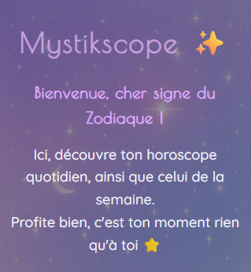
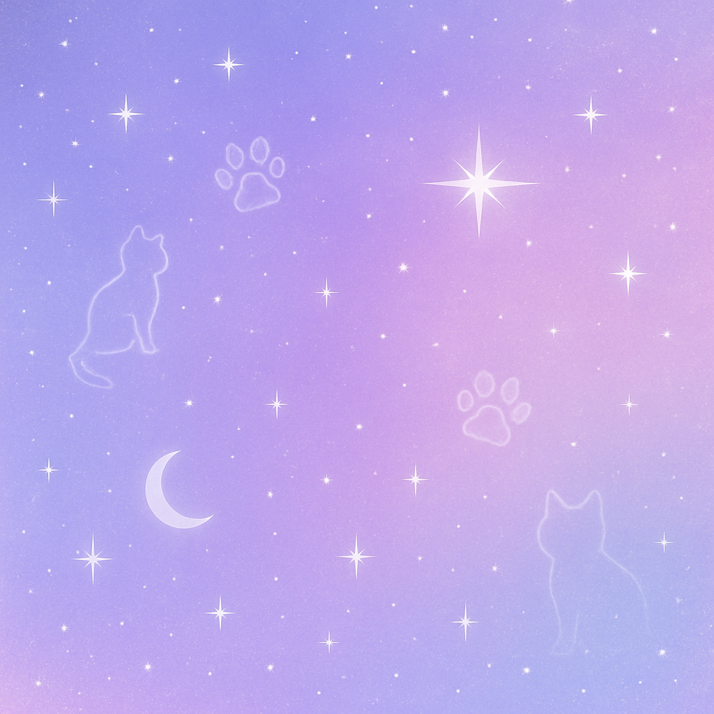

MystikScope 🔮
Application web permettant de consulter son horoscope quotidien selon son signe astrologique ✨
💡Fonctionnalités : intégration d'une API externe, affichage dynamique des résultats avec EJS.
Ce projet m’a permis de consolider mes compétences en manipulation du DOM et en consommation d’API.
Potionix ⚗️
🚧 Projet en cours de développement 🚧
Application ludique de création de potions magiques à partir d’ingrédients sélectionnés par l'utilisateur 🫧
🧪 Fonctionnalités : génération aléatoire de résultats, gestion d’événements, logique conditionnelle.
Voir sur GitHub